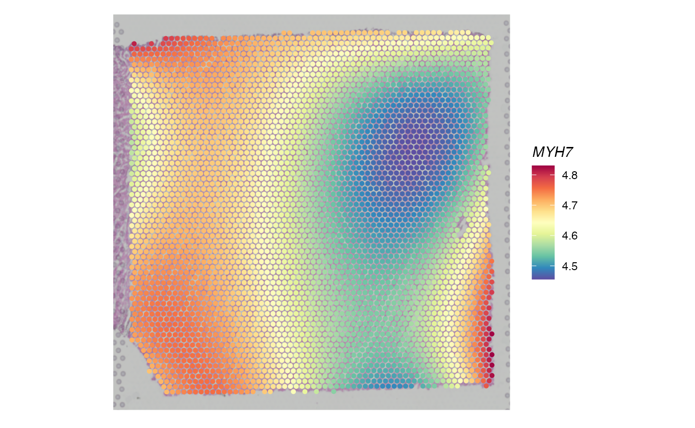

Model spatial gene expression patterns
Haotian Zhuang
September 23, 2025
Source:vignettes/PreTSA_spatial.Rmd
PreTSA_spatial.RmdIntroduction
We will demonstrate how to use PreTSA to fit the gene expression along spatial locations and identify spatially variable genes (SVGs).
Install and load the package
if (!require("devtools"))
install.packages("devtools")
devtools::install_github("haotian-zhuang/PreTSA")Load and preprocess the dataset
The Visium dataset of a human heart tissue was downloaded from the 10x
website. Mitochondrial genes and genes that are expressed in fewer
than 50 spots were filtered out. We analyzed a final set of 11,953 genes
on 4,247 spots. SCTransform with default settings was used
to normalize the raw count data.
suppressPackageStartupMessages(library(Seurat))
d <- Load10X_Spatial(data.dir = system.file("extdata", "visium_human_heart", package = "PreTSA"), filename = "V1_Human_Heart_filtered_feature_bc_matrix.h5")
counts <- d@assays$Spatial$counts
counts <- counts[rowSums(counts > 0) >= 50, ]
counts <- counts[!grepl("MT-", rownames(counts)), ]
d <- subset(d, features = rownames(counts))
d <- SCTransform(d, assay = "Spatial", verbose = FALSE)
expr <- d@assays$SCT$dataThe processed dataset can be loaded directly from the package to save time.
load(system.file("extdata", "visium_human_heart", "preprocessed.Rdata", package = "PreTSA"))
str(expr)
#> Formal class 'dgCMatrix' [package "Matrix"] with 6 slots
#> ..@ i : int [1:8104687] 9 10 16 22 23 45 50 59 61 68 ...
#> ..@ p : int [1:4248] 0 1970 4194 6523 8020 9234 11174 12758 15297 17812 ...
#> ..@ Dim : int [1:2] 11953 4247
#> ..@ Dimnames:List of 2
#> .. ..$ : chr [1:11953] "LINC01409" "LINC01128" "NOC2L" "PERM1" ...
#> .. ..$ : chr [1:4247] "AAACAAGTATCTCCCA-1" "AAACACCAATAACTGC-1" "AAACAGAGCGACTCCT-1" "AAACAGCTTTCAGAAG-1" ...
#> ..@ x : num [1:8104687] 0.693 0.693 0.693 1.792 0.693 ...
#> ..@ factors : list()
str(coord)
#> int [1:4247, 1:2] 50 59 14 43 47 62 61 3 45 54 ...
#> - attr(*, "dimnames")=List of 2
#> ..$ : chr [1:4247] "AAACAAGTATCTCCCA-1" "AAACACCAATAACTGC-1" "AAACAGAGCGACTCCT-1" "AAACAGCTTTCAGAAG-1" ...
#> ..$ : chr [1:2] "row" "col"Fit the gene expression along spatial locations
fitRes <- spatialFit(expr = expr, coord = coord)
str(fitRes)
#> num [1:11953, 1:4247] 0.0242 0.1786 0.1103 0.2397 0.2105 ...
#> - attr(*, "dimnames")=List of 2
#> ..$ : chr [1:11953] "LINC01409" "LINC01128" "NOC2L" "PERM1" ...
#> ..$ : chr [1:4247] "AAACAAGTATCTCCCA-1" "AAACACCAATAACTGC-1" "AAACAGAGCGACTCCT-1" "AAACAGCTTTCAGAAG-1" ...The argument “knot” indicates the number of knots (0 by default) or automatic selection (“auto”). The argument “maxknotallowed” is the user-defined maximum number of knots (5 by default).
spatialFit(expr = expr, coord = coord, knot = "auto", maxknotallowed = 5)Identify spatially variable genes (SVGs)
It returns a data frame with the p-value, FDR, test statistic and number of knots selected for each gene. Genes are ordered first by p-value (increasing) then by test statistic (decreasing).
testRes <- spatialTest(expr = expr, coord = coord)
head(testRes)
#> fdr logpval pval fstat knotnum
#> ACTA1 5.060461e-285 -664.0040 4.233632e-289 110.25955 0
#> MYL2 1.577822e-235 -549.3470 2.640043e-239 89.38514 0
#> MYH7 3.769610e-128 -301.6940 9.461081e-132 47.83705 0
#> MYL7 9.922529e-128 -300.4385 3.320515e-131 47.63771 0
#> FOS 5.243372e-120 -282.4325 2.193329e-123 44.79034 0
#> JUNB 9.895300e-109 -256.2867 4.967105e-112 40.69318 0Use binning strategy for large datasets
To mitigate memory demands in generating the full gene expression matrix for extremely large datasets, PreTSA can divide the genes into multiple bins (10 by default) and then combine the fitted gene expression matrices obtained from each bin.
fitRes <- spatialFit_bin(expr = expr, coord = coord, numbin = 10)
#> [1] 1
#> [1] 2
#> [1] 3
#> [1] 4
#> [1] 5
#> [1] 6
#> [1] 7
#> [1] 8
#> [1] 9
#> [1] 10
str(fitRes)
#> num [1:11953, 1:4247] 0.0242 0.1786 0.1103 0.2397 0.2105 ...
#> - attr(*, "dimnames")=List of 2
#> ..$ : chr [1:11953] "LINC01409" "LINC01128" "NOC2L" "PERM1" ...
#> ..$ : chr [1:4247] "AAACAAGTATCTCCCA-1" "AAACACCAATAACTGC-1" "AAACAGAGCGACTCCT-1" "AAACAGCTTTCAGAAG-1" ...
testRes <- spatialTest_bin(expr = expr, coord = coord, numbin = 10)
#> [1] 1
#> [1] 2
#> [1] 3
#> [1] 4
#> [1] 5
#> [1] 6
#> [1] 7
#> [1] 8
#> [1] 9
#> [1] 10
head(testRes)
#> fdr logpval pval fstat knotnum
#> ACTA1 5.060461e-285 -664.0040 4.233632e-289 110.25955 0
#> MYL2 1.577822e-235 -549.3470 2.640043e-239 89.38514 0
#> MYH7 3.769610e-128 -301.6940 9.461081e-132 47.83705 0
#> MYL7 9.922529e-128 -300.4385 3.320515e-131 47.63771 0
#> FOS 5.243372e-120 -282.4325 2.193329e-123 44.79034 0
#> JUNB 9.895300e-109 -256.2867 4.967105e-112 40.69318 0Visualize the fitted expression
The fitted PreTSA expression can be seamlessly incorporated into the
Seurat pipeline.
d[["Fitted"]] <- CreateAssayObject(data = fitRes)
#> Warning: Layer counts isn't present in the assay object; returning NULL
DefaultAssay(d) <- "Fitted"As an example, the fitted PreTSA expression of MYH7 shows that spots in the right side have significantly lower expression levels than those in the left side.
suppressPackageStartupMessages(library(ggplot2))
genename <- "MYH7"
SpatialFeaturePlot(d, features = genename, image.alpha = 0.8, pt.size.factor = 2.5) +
theme(legend.position = "right", legend.title = element_text(face = "italic"))
Session Info
sessionInfo()
#> R version 4.4.1 (2024-06-14)
#> Platform: aarch64-apple-darwin20
#> Running under: macOS 15.6.1
#>
#> Matrix products: default
#> BLAS: /Library/Frameworks/R.framework/Versions/4.4-arm64/Resources/lib/libRblas.0.dylib
#> LAPACK: /Library/Frameworks/R.framework/Versions/4.4-arm64/Resources/lib/libRlapack.dylib; LAPACK version 3.12.0
#>
#> locale:
#> [1] en_US.UTF-8/en_US.UTF-8/en_US.UTF-8/C/en_US.UTF-8/en_US.UTF-8
#>
#> time zone: America/New_York
#> tzcode source: internal
#>
#> attached base packages:
#> [1] stats graphics grDevices utils datasets methods base
#>
#> other attached packages:
#> [1] ggplot2_3.5.1 Seurat_5.1.0 SeuratObject_5.0.2 sp_2.1-4
#> [5] PreTSA_1.1
#>
#> loaded via a namespace (and not attached):
#> [1] RColorBrewer_1.1-3 rstudioapi_0.16.0 jsonlite_1.8.8
#> [4] magrittr_2.0.3 spatstat.utils_3.1-0 farver_2.1.2
#> [7] rmarkdown_2.28 fs_1.6.4 ragg_1.3.2
#> [10] vctrs_0.6.5 ROCR_1.0-11 spatstat.explore_3.3-2
#> [13] htmltools_0.5.8.1 sass_0.4.9 sctransform_0.4.1
#> [16] parallelly_1.38.0 KernSmooth_2.23-24 bslib_0.8.0
#> [19] htmlwidgets_1.6.4 desc_1.4.3 ica_1.0-3
#> [22] plyr_1.8.9 plotly_4.10.4 zoo_1.8-12
#> [25] cachem_1.1.0 igraph_2.0.3 mime_0.12
#> [28] lifecycle_1.0.4 pkgconfig_2.0.3 Matrix_1.7-0
#> [31] R6_2.5.1 fastmap_1.2.0 fitdistrplus_1.2-1
#> [34] future_1.34.0 shiny_1.9.1 digest_0.6.37
#> [37] colorspace_2.1-1 patchwork_1.3.0 tensor_1.5
#> [40] RSpectra_0.16-2 irlba_2.3.5.1 textshaping_0.4.0
#> [43] labeling_0.4.3 progressr_0.14.0 fansi_1.0.6
#> [46] spatstat.sparse_3.1-0 httr_1.4.7 polyclip_1.10-7
#> [49] abind_1.4-8 compiler_4.4.1 withr_3.0.1
#> [52] bit64_4.5.2 fastDummies_1.7.4 highr_0.11
#> [55] MASS_7.3-60.2 tools_4.4.1 lmtest_0.9-40
#> [58] httpuv_1.6.15 future.apply_1.11.2 goftest_1.2-3
#> [61] glue_1.7.0 nlme_3.1-164 promises_1.3.0
#> [64] grid_4.4.1 Rtsne_0.17 cluster_2.1.6
#> [67] reshape2_1.4.4 generics_0.1.3 hdf5r_1.3.11
#> [70] gtable_0.3.5 spatstat.data_3.1-2 tidyr_1.3.1
#> [73] data.table_1.16.2 utf8_1.2.4 spatstat.geom_3.3-3
#> [76] RcppAnnoy_0.0.22 ggrepel_0.9.6 RANN_2.6.2
#> [79] pillar_1.9.0 stringr_1.5.1 spam_2.11-0
#> [82] RcppHNSW_0.6.0 later_1.3.2 splines_4.4.1
#> [85] dplyr_1.1.4 lattice_0.22-6 survival_3.6-4
#> [88] bit_4.5.0 deldir_2.0-4 tidyselect_1.2.1
#> [91] miniUI_0.1.1.1 pbapply_1.7-2 knitr_1.48
#> [94] gridExtra_2.3 scattermore_1.2 xfun_0.47
#> [97] matrixStats_1.3.0 stringi_1.8.4 lazyeval_0.2.2
#> [100] yaml_2.3.10 evaluate_0.24.0 codetools_0.2-20
#> [103] tibble_3.2.1 cli_3.6.3 uwot_0.2.2
#> [106] xtable_1.8-4 reticulate_1.39.0 systemfonts_1.1.0
#> [109] munsell_0.5.1 jquerylib_0.1.4 Rcpp_1.0.13
#> [112] globals_0.16.3 spatstat.random_3.3-2 png_0.1-8
#> [115] spatstat.univar_3.0-1 parallel_4.4.1 pkgdown_2.1.0
#> [118] dotCall64_1.2 listenv_0.9.1 viridisLite_0.4.2
#> [121] scales_1.3.0 ggridges_0.5.6 leiden_0.4.3.1
#> [124] purrr_1.0.2 rlang_1.1.4 cowplot_1.1.3